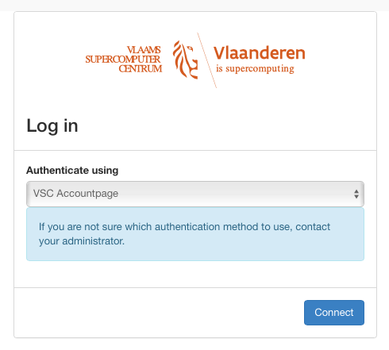

Access to the VSC Cloud#
Access to the VSC Cloud is linked to the central VSC account system (account.vscentrum.be), so you do not need a separate login or password. In order to use the cloud services,
-
you need an active VSC account and
-
your account must be a member of one or more OpenStack projects.
New users can obtain an account by following the procedure described here. Once you have an account, contact if you want to start a new OpenStack project, or join an existing one.
You can interact with the VSC Cloud using the OpenStack Dashboard, a web interface, or the OpenStack command line interface, which you can use from any system, and which is installed for you on the UGent login node login.hpc.ugent.be. You can log in to the Dashboard using the VSC accountpage, as illustrated in the next section. To get access from the command line interface, you'll need to obtain an application credential, as explained in section application credentials.
These restrictions do not apply to someone who simply wishes to access an existing VM running in the cloud. VSC Cloud projects can decide themselves who gets access to their VM's, and how.
Dashboard Login#
You can access the OpenStack web interface, or Dashboard, via cloud.vscentrum.be.
To log in, choose the (default) authentication method VSC Accountpage and click .

From here on, follow the standard procedure to log in to your VSC account, using your home institution's single sign-on system. You can find a detailed description in the HPC introduction at hpcugent.github.io/vsc_user_docs. The following chapters explain how to accomplish basic tasks using the Dashboard.
Application Credentials#
If you want to use the OpenStack command line interface --- or, for advanced users, use the OpenStack APIs directly --- you need to identify yourself using an application credential. An application credential contains a secret piece of information which grants access to an OpenStack project on your behalf.
You can create an application credential using the dashboard:
-
Log in to the dashboard, and, if you are a member of more than one project, select the project for which you want to create an application credential.
-
Open the Identity tab, and click Application Credentials.
-
You can now see an overview of your application credentials (initially none). Click Create Application Credential.
-
Fill out the Create Application Credential dialog:
-
- Name, Description
- Choose a name (mandatory) and description that remind you of the purpose of this credential.
-
- Secret
- We recommend to leave this empty, in which case OpenStack will generate a random secret for you.
-
- Expiration Date, Expiration Time
- It is good practice make the token expire. An expiration date limits the impact if the secret is accidentally exposed, and you can always create a new credential when an old one is expired.
-
- Roles
- A role defines a set of access rights. By selecting a subset of roles for this credential, you can limit the access rights granted by this credential. It is a good idea to select only the minimal set of roles required for the task you want to accomplish.
Click Create Application Credential.
-
-
A summary dialog with the credential's id, name, and secret is displayed. If you close the window, you can't retrieve the secret anymore, so you should save it now. A convenient solution is to download the openrc file, a shell script that sets the appropriate environment variables for the command line interface.
The newly created credential is now shown in the overview. If you accidentally expose a credential somewhere, you should delete it here to prevent unauthorized access to the system.